ダイドードリンコ 復刻堂ふきだしシール（2006年？入手）
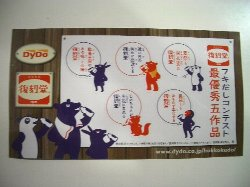
DyDoウェブサイトにてプレゼントしていました。
ふきだしコンテストに応募された作品がシールになっています。
復刻堂のジュースを飲むと、昔銭湯で飲んだコーヒー牛乳を思い出します・・・。
日清食品 ちきらーずオリジナルお名前シール（2006年入手）
日清チキンラーメンのウェブでプレゼントしていました。
ひよこちゃんを始め、チキラー島の13人のマスコットが名前シールになっています。>
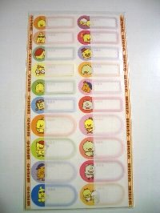
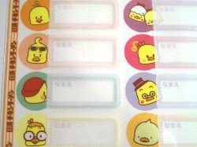
日清食品 ひよこちゃん食品ストッカー（小）（2009年入手）
イオンリテールの懸賞にて。
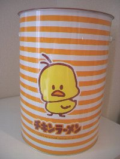
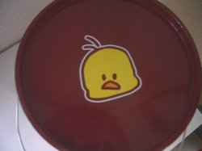
大阪ガス ほっこりくらぶのエコバッグ（2006年入手）
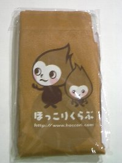
ほっこりくらぶに登録したときいただきました。
ガスだからほのおなんだろうけれど、名前は不明です。
勝手にほっこりちゃん、ほっこり坊やと呼んでいます（笑）
大阪ガス ほっこりくらぶのファイル（2009年入手）
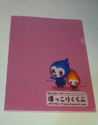
ほっこりくらぶにてプレゼントしていました。
このファイルによって名前が判明しました（笑）
ほっこりー、ともしびーのというお名前だそうです。
今まで勝手な名前をつけてごめんね（謝）
日本郵政公社 ふみのすけボールペン（2007年入手）
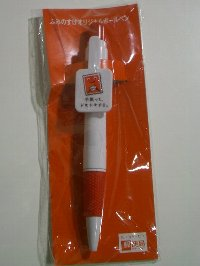
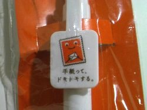
日産 チョロキューブ（1998年？入手）
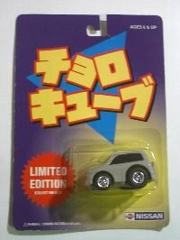
旭化成 ハンドタオル（2000年入手）
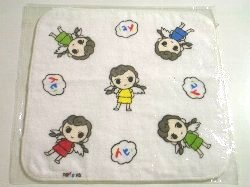
ムシューダ クマさんハンドタオル（2009年入手）
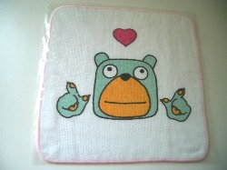
エステー宣伝部ドットコムのプレゼント。
クマさんをテレビで見て以来ファンです。エステーって消臭ポットや
お殿様もそうだけど面白いキャラクターでいっぱいですね（笑）
おかいものくまマウスパッド（2006年入手）
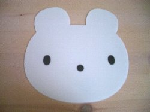
ちょきんぎょ
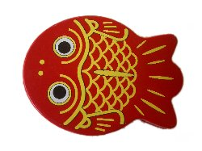
左はちょきんぎょ 3D保管ケース、右はちょきんぎょ爪きり。（2009年入手）
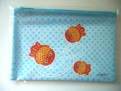
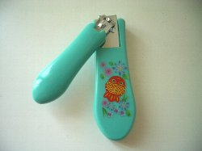
ちょきんぎょの貯金箱
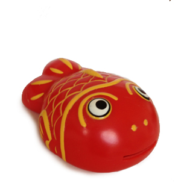
最終更新日 2014.07.23